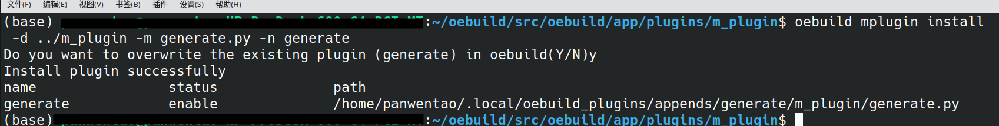
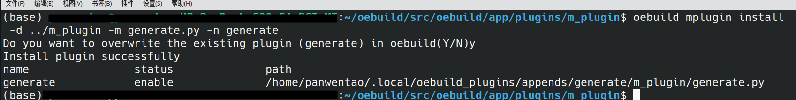
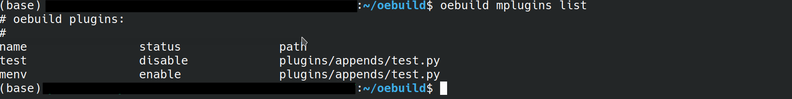
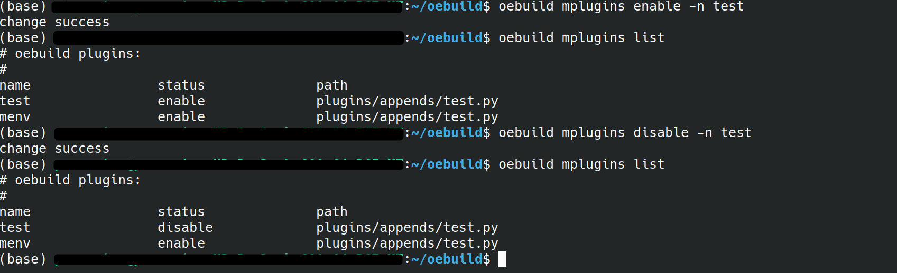
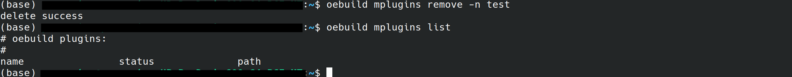

插件管理命令–mplugin¶
该命令用于用户在编写了一些自定义插件，希望加入到本地oebuild进行使用时，可以通过此命令加入到oebuild中，并且在通过检测之后就可以直接 按照插件逻辑进行使用。
install: 安装插件¶
此命令会在~/.local文件夹下创建一个oebuild_plugins文件夹，里面会存放对应的yaml环境配置文件及对应插件文件夹。
oebuild mplugin install [-d directory -m file_name] [-f file_name] -n plugin_name
此命令允许您指定一个文件或文件夹作为目标。使用 -d 参数时，请提供文件夹的具体路径。鉴于插件解析过程中必须指定一个主导文件， 因此 -m 参数用来指明文件夹内的主文件。而 -n 参数则用于指定插件的名称。
Note
指定参数为-d时，必须要指定-m参数，否则会安装失败。
如下图所示：
 

执行完上述命令后会有对应的创建成功提示，并显示出当前创建的插件名，插件状态和对应文件路径。
list: 查看插件¶
此命令可以查看当前有哪些插件配置。
oebuild mplugin list
如下图所示：
enable/disable: 使能/屏蔽插件¶
此命令可以使能/屏蔽对应名称的插件。
oebuild mplugin enable/disable -n plugin_name
其中plugin_name为用户自定义的插件名称，可以使用list命令查看当前自定义安装的插件列表，并在必要时对特定插件进行对应插件使能/屏蔽。
如下图所示：
remove: 删除插件¶
此命令可以删除对应名称的插件配置。
oebuild mplugin remove -n plugin_name
其中plugin_name为用户自定义的插件名称，您可以使用list命令来查看所有插件的列表，并在确认后选择删除特定的插件。每次成功删除插件后，都会显示一条提示信息，告知操作已成功完成。
如下图所示：
oebuild插件编写规范¶
为了增强oebuild的可扩展性，我们引入了用户自定义插件的功能。为了让用户能够迅速编写出符合oebuild规范的代码，我们制定了一系列插件编写规范。
1. 在开始编写插件时，您可以从oebuild源文件中复制 oebuild/src/oebuild/app/plugins/demo/demo.py 作为您的第一个插件文件。示例文件中的 super.__init__ 方法有三个参数：name（命令名称）、help_msg（帮助说明）、description（功能说明）。在填写完这些基本参数后，您需要实现 do_add_parser 和 do_run 两个功能。do_add_parser 的主要作用是添加命令行参数，例如 -h、-d、-f、-n 等。 您可以参考 oebuild/src/oebuild/app/plugins/init/init.py 中的对应方法来添加参数。如果您对 do_add_parser 方法的使用有疑问，可以搜索 Python 中 parser_adder.add_argument 的使用教程。do_run 方法则是插件功能的具体实现部分，它通过判断输入的命令和对应的参数来执行不同的功能。
2. 如何实现接收命令行参数？ 要在Python程序中接收命令行参数，你可以使用argparse模块。首先，在do_add_parser函数中，你可以添加所需的命令行参数。然后，在do_run方法中， 你可以通过args这个不定项参数来接收这些命令行参数。在do_add_parser中，通过add_argument方法的dest参数定义了每个参数的名称。 这样，你就可以在do_run方法中使用这些参数的名称来访问它们了。
3. 合规的插件是怎样的？ python文件中需要有一个类继承OebuildCommand。 对应的继承类需要实现do_add_parser和do_run方法。 代码需要符合python本身的编码规范，不能有编写错误导致代码本身报错。 这样您就可以完成一份合乎规范的插件编写。
oebuild-demo.py代码如下：
import argparse
import textwrap
import logging
from oebuild.command import OebuildCommand
from oebuild.util import *
from oebuild.configure import Configure
logger = logging.getLogger()
class Demo(OebuildCommand):
def __init__(self):
self.configure = Configure()
super().__init__(
'{}',
'this is your help mesasge',
description=textwrap.dedent('''\
this is your description message
'''
))
def do_add_parser(self, parser_adder) -> argparse.ArgumentParser:
parser = self._parser(
parser_adder,
usage='''
%(prog)s [-m URL] [--mr REVISION] [--mf FILE] [directory]
%(prog)s -l [--mf FILE] directory
''')
return parser
def do_run(self, args: argparse.Namespace, unknown = None):
args = args.parse_args(unknown)
pass
oebuild-init.py的代码如下:
def do_add_parser(self, parser_adder):
self._parser(
parser_adder,
usage='''
%(prog)s [directory] [-u yocto_remote_url] [-b branch]
''')
parser_adder.add_argument('-u','--yocto_remote_url', dest = 'yocto_remote_url',
help='''Specifies the remote of yocto-meta-openeuler''')
parser_adder.add_argument('-b', '--branch', dest = 'branch',
help='''Specifies the branch of yocto-meta-openeuler''')
parser_adder.add_argument(
'directory', nargs='?', default=None,
help='''The name of the directory that will be initialized''')
return parser_adder
def do_run(self, args: argparse.ArgumentParser, unknown = None):
'''
detach target directory if finished init, if inited, just put out err msg and exit
'''
# perpare parse help command
if self.pre_parse_help(args, unknown):
return
args = args.parse_args(unknown)
if self.configure.is_oebuild_dir():
log = f'The "{os.path.dirname(self.configure.oebuild_dir())}" \
has already been initialized, please change other directory'
logger.error(log)
sys.exit(-1)
if args.directory is None:
logger.error("'oebuild init' need param directory")
logger.info("\noebuild init help:")
self.print_help_msg()
return
if not self.init_workspace(args.directory):
logger.error("mkdir %s failed", args.directory)
return
os.chdir(args.directory)
oebuild_config:Config = self.configure.parse_oebuild_config()
yocto_config:ConfigBasicRepo = oebuild_config.basic_repo[YOCTO_META_OPENEULER]
if args.yocto_remote_url is not None:
yocto_config.remote_url = args.yocto_remote_url
if args.branch is not None:
yocto_config.branch = args.branch
oebuild_config.basic_repo[YOCTO_META_OPENEULER] = yocto_config
self.configure.update_oebuild_config(oebuild_config)
logger.info("init %s successful",args.directory)
format_msg = f'''
There is a build configuration example file under {args.directory}/.oebuild/compile.yaml.sample,
if you want to block complex generate instructions, you can directly copy a configuration file,
and then modify it according to your own needs, and then execute `oebuild generate -c <compile_dir>`.
please execute the follow commands next
cd {os.path.abspath(os.getcwd())}
oebuild update
'''
print(format_msg)